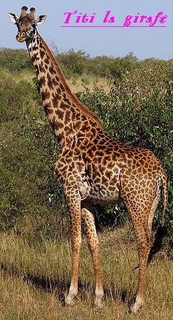

Initiation au développement Web
Objectifs :
- Création d’une page web qui sera alimentée tout au long de l’année par les projets et activités réalisés dans la spécialité.
- Rappels sur HTML5 et CSS3 (document.pdf joint)
- Appropriation des technologies du web.
- Travail à réaliser :
- A partir de l’index « structure d’une page » fourni, réaliser votre propre page web.
- Vous devez prévoir des liens vers d’autres pages dans la partie « navigation »
- Attribuer un titre pertinent à votre page web
- Respecter et les règles de la propriété intellectuelle (les droits d’images par exemple). Site « filecys »
